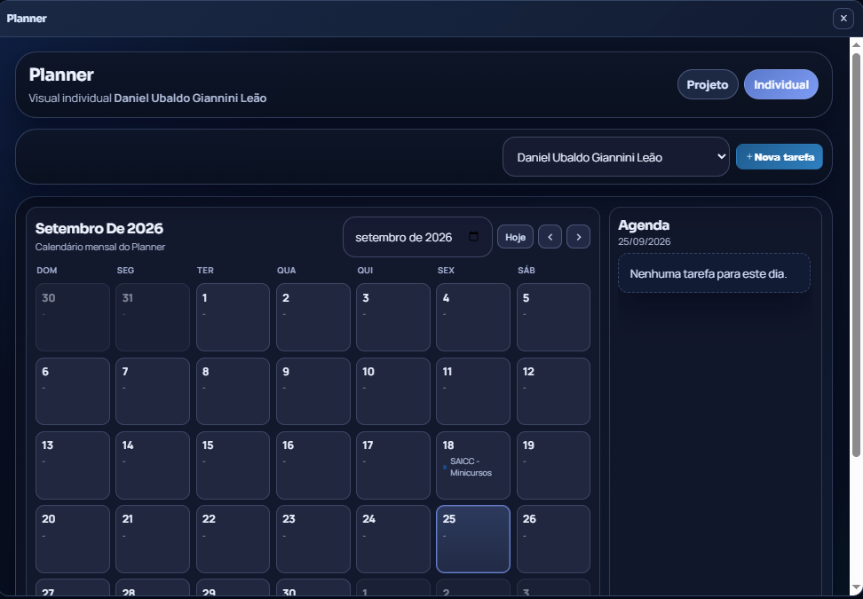

Web designer e desenvolvedor front-end
Yan Veiga
Interfaces claras para produtos que resolvem problemas reais.
Desenvolvo experiências web responsivas com foco em usabilidade, organização da informação e código bem estruturado. Hoje, atuo em projetos do PET Ciências Computacionais da FURG.

Design de interfaces, HTML, CSS, JavaScript e React aplicados em produtos reais.
Rio Grande, RSProjetos selecionados
Trabalhos com contexto, interface e resultado.

02
Portal PET C3
Portal interno para organizar atividades, planejamentos, relatórios e processos do grupo, reduzindo dispersão de tarefas e facilitando acompanhamento.

03
Site PET C3
Site institucional com foco em hierarquia de conteúdo, responsividade, navegação clara e apresentação dos projetos do PET para a comunidade.
Outros trabalhos
Wild Jumper
Experimento web com linguagem visual de jogo, útil para explorar interação, ritmo e publicação de projetos leves.

Sobre
Aprender, testar e construir.
Gosto de aprender na prática: testar uma ideia, entender o que funciona e melhorar a cada tentativa. É por isso que o front-end me encanta. Para mim, construir uma interface lembra erguer um castelo de areia na praia: cada detalhe muda o resultado, e a ideia vai ganhando forma diante dos olhos.
Interfaces responsivas
Sistemas acadêmicos
Automação de processos
Documentação e melhoria contínua
Contato